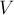
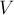
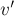
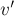

MAXimal
добавлено: 10 Jun 2008 19:27
редактировано: 9 Jul 2009 18:24
Содержание [скрыть]
Поиск компонент сильной связности, построение конденсации графа
Определения, постановка задачи
Дан ориентированный граф  , множество вершин которого  и множество рёбер —
, множество вершин которого  и множество рёбер —  . Петли и кратные рёбра допускаются. Обозначим через
. Петли и кратные рёбра допускаются. Обозначим через  количество вершин графа, через
количество вершин графа, через  — количество рёбер.
— количество рёбер.
Компонентой сильной связности (strongly connected component) называется такое (максимальное по включению) подмножество вершин  , что любые две вершины этого подмножества достижимы друг из друга, т.е. для :
, что любые две вершины этого подмножества достижимы друг из друга, т.е. для :
Понятно, что компоненты сильной связности для данного графа не пересекаются, т.е. фактически это разбиение всех вершин графа. Отсюда логично определение конденсации как графа, получаемого из данного графа сжатием каждой компоненты сильной связности в одну вершину. Каждой вершине графа конденсации соответствует компонента сильной связности графа , а ориентированное ребро между двумя вершинами  и графа конденсации проводится, если найдётся пара вершин
и графа конденсации проводится, если найдётся пара вершин  , между которыми существовало ребро в исходном графе, т.е. .
, между которыми существовало ребро в исходном графе, т.е. .
Важнейшим свойством графа конденсации является то, что он ацикличен. Действительно, предположим, что , докажем, что . Из определения конденсации получаем, что найдутся две вершины и , что . Доказывать будем от противного, т.е. предположим, что , тогда найдутся две вершины и , что . Но т.к.  и находятся в одной компоненте сильной связности, то между ними есть путь; аналогично для
и находятся в одной компоненте сильной связности, то между ними есть путь; аналогично для  и . В итоге, объединяя пути, получаем, что , и одновременно . Следовательно, и должны принадлежать одной компоненте сильной связности, т.е. получили противоречие, что и требовалось доказать.
и . В итоге, объединяя пути, получаем, что , и одновременно . Следовательно, и должны принадлежать одной компоненте сильной связности, т.е. получили противоречие, что и требовалось доказать.
Описываемый ниже алгоритм выделяет в данном графе все компоненты сильной связности. Построить по ним граф конденсации не составит труда.
Алгоритм
Описываемый здесь алгоритм был предложен независимо Косараю (Kosaraju) и Шариром (Sharir) в 1979 г. Это очень простой в реализации алгоритм, основанный на двух сериях поисков в глубину, и потому работающий за время  .
.
На первом шаге алгоритма выполняется серия обходов в глубину, посещающая весь граф. Для этого мы проходимся по всем вершинам графа и из каждой ещё не посещённой вершины вызываем обход в глубину. При этом для каждой вершины запомним время выхода . Эти времена выхода играют ключевую роль в алгоритме, и эта роль выражена в приведённой ниже теореме.
Сначала введём обозначение: время выхода из компоненты сильной связности определим как максимум из значений для всех . Кроме того, в доказательстве теоремы будут упоминаться и времена входа в каждую вершину , и аналогично определим времена входа для каждой компоненты сильной связности как минимум из величин для всех .
Теорема. Пусть и  — две различные компоненты сильной связности, и пусть в графе конденсации между ними есть ребро . Тогда {\rm tout}[C^\prime]">.
— две различные компоненты сильной связности, и пусть в графе конденсации между ними есть ребро . Тогда {\rm tout}[C^\prime]">.
При доказательстве возникает два принципиально различных случая в зависимости от того, в какую из компонент первой зайдёт обход в глубину, т.е. в зависимости от соотношения между и :
- Первой была достигнута компонента . Это означает, что в какой-то момент времени обход в глубину заходит в некоторую вершину компоненты , при этом все остальные вершины компонент и ещё не посещены. Но, т.к. по условию в графе конденсаций есть ребро , то из вершины будет достижима не только вся компонента , но и вся компонента . Это означает, что при запуске из вершины обход в глубину пройдёт по всем вершинам компонент и , а, значит, они станут потомками по отношению к в дереве обхода в глубину, т.е. для любой вершины будет выполнено {\rm tout}[u]">, ч.т.д.
- Первой была достигнута компонента . Опять же, в какой-то момент времени обход в глубину заходит в некоторую вершину , причём все остальные вершины компонент и не посещены. Поскольку по условию в графе конденсаций существовало ребро , то, вследствие ацикличности графа конденсаций, не существует обратного пути , т.е. обход в глубину из вершины не достигнет вершин . Это означает, что они будут посещены обходом в глубину позже, откуда и следует {\rm tout}[C^\prime]">, ч.т.д.
Доказанная теорема является основой алгоритма поиска компонент сильной связности. Из неё следует, что любое ребро в графе конденсаций идёт из компоненты с большей величиной в компоненту с меньшей величиной.
Если мы отсортируем все вершины в порядке убывания времени выхода , то первой окажется некоторая вершина , принадлежащая "корневой" компоненте сильной связности, т.е. в которую не входит ни одно ребро в графе конденсаций. Теперь нам хотелось бы запустить такой обход из этой вершины , который бы посетил только эту компоненту сильной связности и не зашёл ни в какую другую; научившись это делать, мы сможем постепенно выделить все компоненты сильной связности: удалив из графа вершины первой выделенной компоненты, мы снова найдём среди оставшихся вершину с наибольшей величиной , снова запустим из неё этот обход, и т.д.
Чтобы научиться делать такой обход, рассмотрим транспонированный граф , т.е. граф, полученный из изменением направления каждого ребра на противоположное. Нетрудно понять, что в этом графе будут те же компоненты сильной связности, что и в исходном графе. Более того, граф конденсации для него будет равен транспонированному графу конденсации исходного графа . Это означает, что теперь из рассматриваемой нами "корневой" компоненты уже не будут выходить рёбра в другие компоненты.
Таким образом, чтобы обойти всю "корневую" компоненту сильной связности, содержащую некоторую вершину , достаточно запустить обход из вершины в графе . Этот обход посетит все вершины этой компоненты сильной связности и только их. Как уже говорилось, дальше мы можем мысленно удалить эти вершины из графа, находить очередную вершину с максимальным значением и запускать обход на транспонированном графе из неё, и т.д.
Итак, мы построили следующий алгоритм выделения компонент сильной связности:
1 шаг. Запустить серию обходов в глубину графа , которая возвращает вершины в порядке увеличения времени выхода , т.е. некоторый список .
2 шаг. Построить транспонированный граф . Запустить серию обходов в глубину/ширину этого графа в порядке, определяемом списком (а именно, в обратном порядке, т.е. в порядке уменьшения времени выхода). Каждое множество вершин, достигнутое в результате очередного запуска обхода, и будет очередной компонентой сильной связности.
Асимптотика алгоритма, очевидно, равна , поскольку он представляет собой всего лишь два обхода в глубину/ширину.
Наконец, уместно отметить связь с понятием топологической сортировки. Во-первых, шаг 1 алгоритма представляет собой не что иное, как топологическую сортировку графа (фактически именно это и означает сортировка вершин по времени выхода). Во-вторых, сама схема алгоритма такова, что и компоненты сильной связности он генерирует в порядке уменьшения их времён выхода, таким образом, он генерирует компоненты - вершины графа конденсации в порядке топологической сортировки.
Реализация
vector < vector<int> > g, gr; vector<char> used; vector<int> order, component; void dfs1 (int v) { used[v] = true; for (size_t i=0; i<g[v].size(); ++i) if (!used[ g[v][i] ]) dfs1 (g[v][i]); order.push_back (v); } void dfs2 (int v) { used[v] = true; component.push_back (v); for (size_t i=0; i<gr[v].size(); ++i) if (!used[ gr[v][i] ]) dfs2 (gr[v][i]); } int main() { int n; ... чтение n ... for (;;) { int a, b; ... чтение очередного ребра (a,b) ... g[a].push_back (b); gr[b].push_back (a); } used.assign (n, false); for (int i=0; i<n; ++i) if (!used[i]) dfs1 (i); used.assign (n, false); for (int i=0; i<n; ++i) { int v = order[n-1-i]; if (!used[v]) { dfs2 (v); ... вывод очередной component ... component.clear(); } } }
Здесь в  хранится сам граф, а — транспонированный граф. Функция выполняет обход в глубину на графе , функция — на транспонированном . Функция заполняет список вершинами в порядке увеличения времени выхода (фактически, делает топологическую сортировку). Функция сохраняет все достигнутые вершины в списке
хранится сам граф, а — транспонированный граф. Функция выполняет обход в глубину на графе , функция — на транспонированном . Функция заполняет список вершинами в порядке увеличения времени выхода (фактически, делает топологическую сортировку). Функция сохраняет все достигнутые вершины в списке  , который после каждого запуска будет содержать очередную компоненту сильной связности.
, который после каждого запуска будет содержать очередную компоненту сильной связности.
Литература
- Томас Кормен, Чарльз Лейзерсон, Рональд Ривест, Клиффорд Штайн. Алгоритмы: Построение и анализ [2005]
- M. Sharir. A strong-connectivity algorithm and its applications in data-flow analysis [1979]